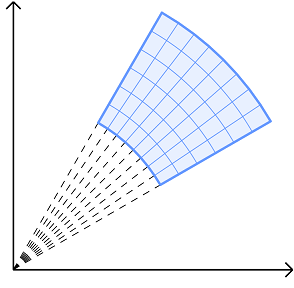
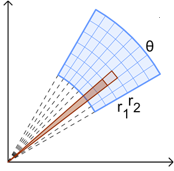
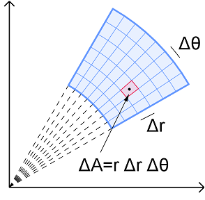

Double & Polar Integrals
Multiple Integrals
Multiple Integrals
The polar coordinate system is useful for describing functions and curves that can be expressed using rotation about the origin, or the pole. A polar coordinate will have the form \((r,\theta)\), where \(r\) is the distance from the origin (a negative \(r\) value would represent a reflection across the origin) and \(\theta\) is the angle from the positive \(x\)-axis (a positive value for \(\theta\) represents counter-clockwise rotation). Back in Calc II, we learned about the graphs of various polar functions, such as roses, limaçons, and lemniscates. You may find the following graph helpful to review these graphs and their formulas. This summary of Polar Graphs (PDF) may also be helpful.
To evaluate a double integral in polar coordinates, let us follow a process similar to using a Riemann sum and the box approximation method that we looked at earlier with double integrals over rectangular regions. By breaking up a region \(R\) in the \(xy\)-plane into rectangles, we can compute the volume of the box bounded above each rectangle and below a function \(z=f(x,y)\). In the rectangular or Cartesian coordinate system, these rectangles are truly rectangles having dimensions \(\Delta x\) by \(\Delta y\). But when we switch to polar, these rectangles are not truly rectangles. Instead, they are shaped slightly differently since we are rotating about the origin. In the illustration below, a polar region is divided into smaller " rectangles" or sub-regions. For each sub-region, two of the facing sides are at slightly different angles because they correspond to a different angle of rotation about the origin. The other two facing sides are actually arcs of two different circles, one having an inner radius and the other having an outer radius. Even though they are not actually rectangles, if we can find the area of each of these sub-regions then we can find the volume of the box above each sub-region.
So, how can we determine the area of these polar "rectangles" or sub-regions that are not truly rectangles? Well, if we think of each of these "rectangular" areas as part of a sector, then we can apply the sector area formula \(A=\frac{1}{2}r^2\theta\).
The graph above shows two overlapping sectors that subtend a central angle \(\theta\). The smaller sector has radius \(r_1\) and the larger sector has a radius of \(r_2\). The polar "rectangular" area that we want to find is the part of the larger sector that extends beyond the smaller sector, which can be done as follows.
\[\begin{align*} A &= A_2 - A_1 \\ &= \frac{1}{2} (r_2)^2 \theta - \frac{1}{2} (r_1)^2 \theta \\ &= \frac{1}{2} \left( r_{2}^2-r_{1}^2 \right) \theta \\ &= \frac{1}{2} (r_2 + r_1)(r_2 - r_1) \theta \end{align*}\]In the above result, the expression \(\frac{1}{2} (r_2 + r_1)\) gives the average of the radii of the two arcs, which we can just call \(r\). The expression \(r_2 - r_1\) is the difference in the radii, which we can call \(\Delta r\). Applying the limit as the number of sub-regions increase towards infinity means we can think of \(\theta\) as \(\Delta \theta\). Putting this all together, we get that the area of each sub-rectangle can be computed by \(A = \frac{1}{2} r \Delta r \Delta\theta\) where \(r\) is the radius of the midpoint of the sub-region, and the dimensions of the region are \(\Delta r\) by \(\Delta \theta\). See the illustration below.
Double Integral in Polar Coordinates: For a function \(z=f(x,y)\), we can convert it to polar coordinates using \(x=r\cos\theta\) and \(y=r\sin\theta\). If \(f\) is a continuous function over the polar region \(R\), then the double integral of \(f\) over \(R\) can also be converted to polar coordinates where \(a\) and \(b\) are the inner and outer radii of the region (where \(0 \leq a \leq r \leq b\)), and \( \alpha \) and \(\beta \) are the bounding angles (where \(\alpha \leq \theta \leq \beta\) and \(0 \leq \beta - \alpha \leq 2\pi\)).
\[\underset{R}{\mathop \iint}\, f(x,y)~dA = \int_{\alpha}^{\beta} \int_{a}^{b} \, f(r,\theta )~r~dr~d\theta\]Self-Check #5: Set up and evaluate a double integral using polar coordinates to determine the volume below \(f(x,y) = x^3 + xy^2\) that is above the region bounded by the disks \(1 \le x^2 + y^2 \le 3\) withing the first quadrant. (Select the most appropriate response.)
(Answer: C) -- It is best to start problems like this by sketching a graph of the bounded region \(R\). The equations \(x^2 + y^2 = 1\) and \(x^2 + y^2 = 3\) define two cicles centered at the origin having a radius of 1 and 3, respectively. Then we can shade the region between the two circles within the 1st quadrant using radial slices.
From the graph above, we can see that \(1 \le r \le 3\) and \(0 \le \theta \le \frac{\pi}{2}\). This defines the limits of integration. We then need to determine the integrand by converting \(f\) to polar.
\[\begin{align*} f(x,y) &= x^3 = xy^2 \\ &= x(x^2 + y^2) \\ &= r\cos(\theta) (r^2) \\ &= r^3 \cos(\theta) = f(r,\theta) \end{align*}\]Lastly, remember that we get an extra \(r\) in the integrand as a result of the sector area method we discussed above. Putting everything together gives us the following integral, we can can evaluate.
\[\begin{align*} V &= \underset{R}{\mathop \iint}\, f(x,y)~dA \\ &= \int_{\alpha}^{\beta} \int_{a}^{b} \, f(r,\theta )~r~dr~d\theta \\ &= \int_{0}^{\pi/2} \int_{1}^{3} r^4 \cos(\theta) ~dr~d\theta \\ &= \int_{0}^{\pi/2} \left(\frac{1}{5}r^5\cos(\theta)\right)\biggr|_{1}^{3}~d\theta \\ &= \int_{0}^{\pi/2} \left(\frac{243}{5}\cos(\theta) - \frac{1}{5}\cos(\theta)\right)~d\theta \\ &= \int_{0}^{\pi/2} \frac{242}{5}\cos(\theta)~d\theta \\ &= \frac{242}{5} \left(\sin(\theta)\right)\biggr|_{0}^{\pi/2} \\ &= \frac{242}{5} \left(\sin(\frac{\pi}{2}) - \sin(0)\right) \\ &= \frac{242}{5}(1 - 0) \\ &= \frac{242}{5} \end{align*}\]©2024 M4thG33x (new window) Some Rights Reserved.